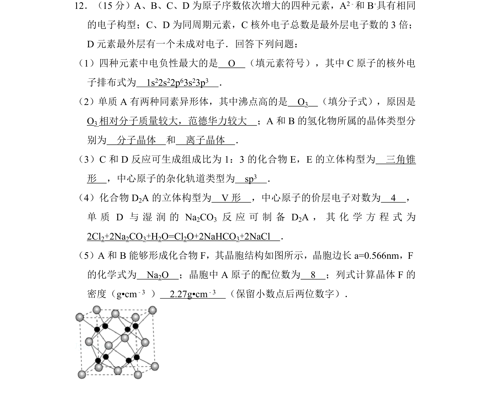
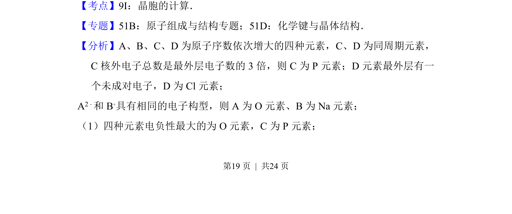
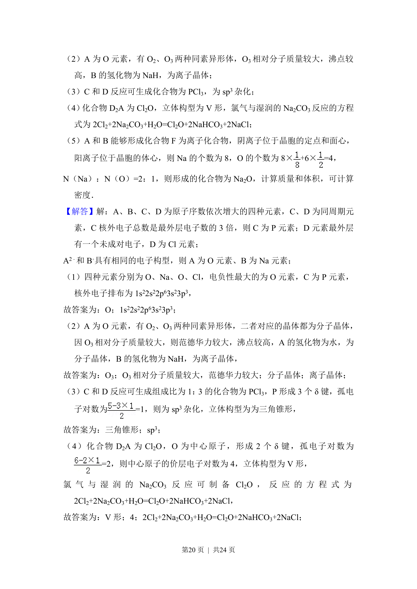
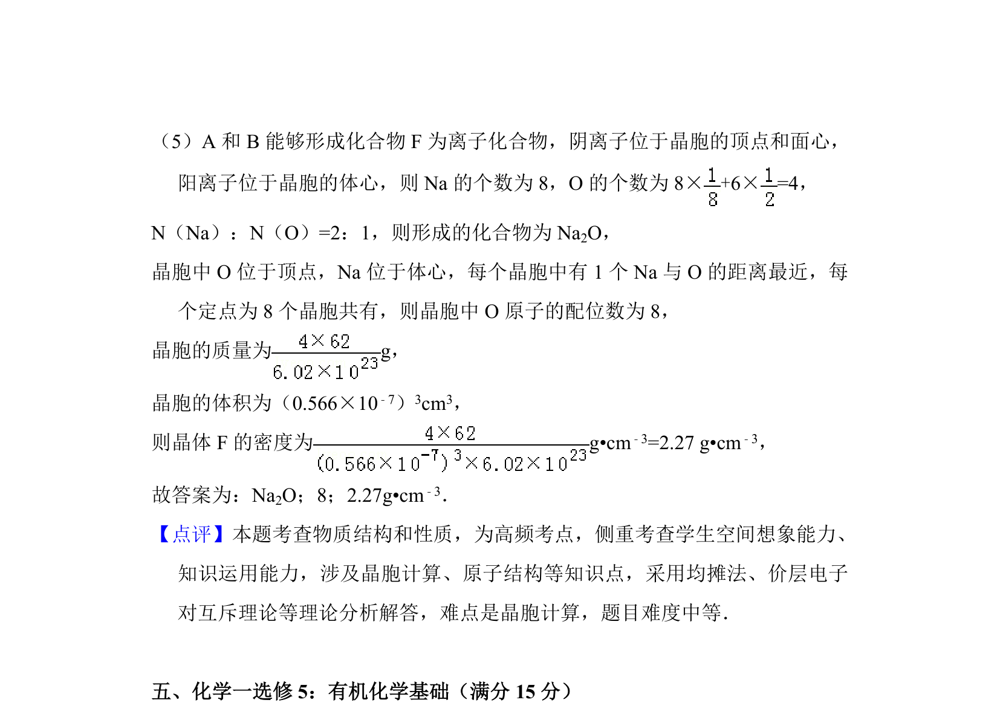

2015-新课标Ⅱ-12
吉林2015卷新课标Ⅱ不分题12题型填空难中
考点：元素周期律 分子构型与杂化 晶胞计算 密度求解
题面

摘要
本题考查元素推断、物质结构与性质的综合应用，涉及电负性、电子排布、晶体类型、分子构型、杂化方式及晶胞密度计算等。
关联考点
答案与解析



📄 原 PDF 第 19 页：素材/真题/吉林/2008-2024·（吉林）化学高考真题/2015年高考化学试卷（新课标Ⅱ）（解析卷）.pdf